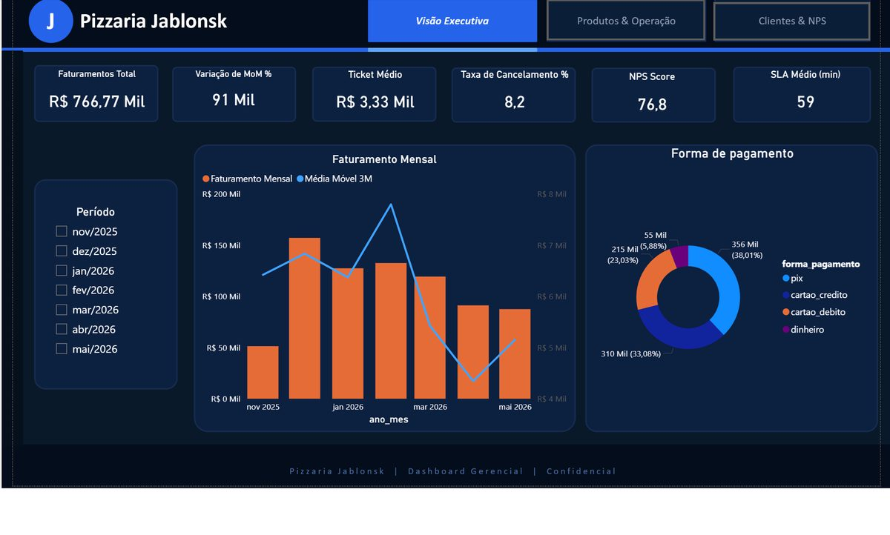
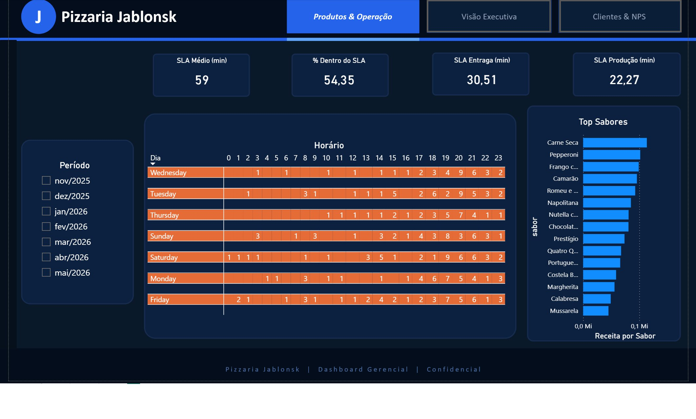
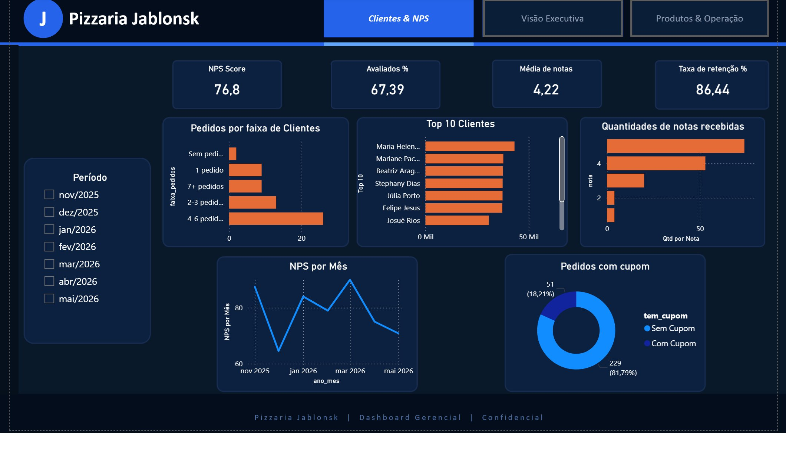
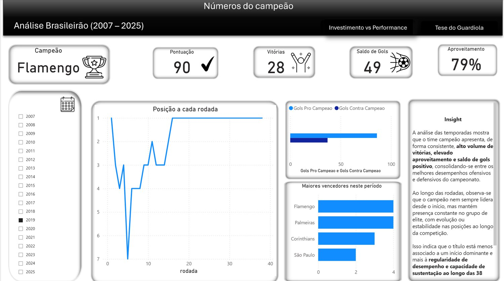
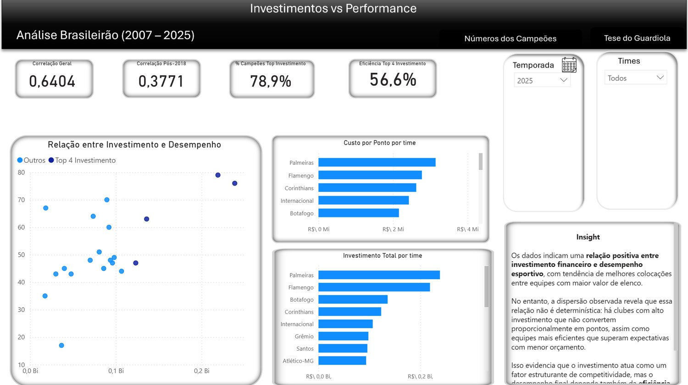
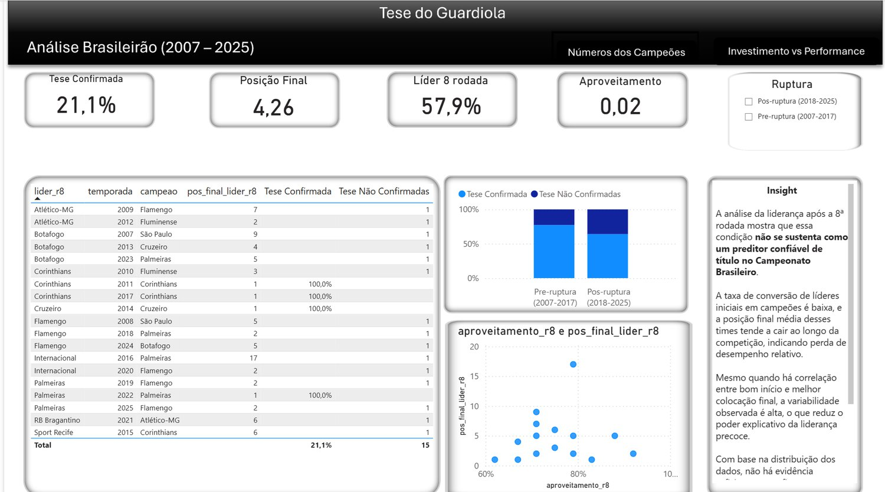

Assistente de BI / Dados Jr. com background em negócios — transformo dados brutos em insights que apoiam decisões reais. Python · SQL · Power BI · Estatística.

Sobre mim
Minha jornada na área de dados começou de dentro para fora. Como Analista de Negócios na ACT Digital, passei um ano e meio levantando requisitos, mapeando processos e comunicando indicadores para stakeholders — e foi exatamente ali que percebi que queria estar do outro lado da equação: construindo as análises, não apenas consumindo.
Venho da Análise de Negócios e hoje trabalho como analista de dados nos meus próprios projetos, buscando a primeira posição formal na área. Tenho graduação em Análise e Desenvolvimento de Sistemas e curso bacharelado em Engenharia de Dados. Trabalho com Python, SQL, Power BI e estatística aplicada para transformar dados brutos em decisões mais inteligentes.
O que me diferencia é a combinação entre visão técnica e sensibilidade de negócio: sei construir um pipeline ETL em Python e sei explicar o que ele significa para um gestor.
Stack técnico
Ferramentas e tecnologias que uso no dia a dia para análise, engenharia e visualização de dados. Cada card aponta onde a stack aparece — só entra na lista o que tem projeto para provar.
Pizzaria · Brasileirão · E-commerce
Todos os projetos
Pizzaria Jablonsk
Brasileirão · HR Analytics
Pizzaria · Brasileirão
ACT Digital · todos os projetos
Portfólio
Projetos reais aplicando Python, SQL e Power BI em problemas de negócio nas áreas de food service, esportes e RH.


3 páginas do relatório · clique para ampliar
Problema: como construir uma cadeia completa de dados quando não existe nenhum dado? Solução: modelei o domínio, construí o sistema transacional (Flask + MySQL), gerei 6 meses de operação com um simulador de demanda parametrizado (sazonalidade por dia da semana e por hora) e montei views em star schema sobre as tabelas operacionais. Resultado: pipeline OLTP → star schema → dashboard executivo em 3 páginas, com as métricas que uma pizzaria real acompanharia (faturamento, NPS, SLA de entrega, LTV).
Dados sintéticos — o objetivo é demonstrar a arquitetura, não extrair conclusões de mercado.



3 páginas do relatório · clique para ampliar
Problema: quanto o valor de mercado do elenco se associa ao desempenho no Brasileirão? Solução: ETL em Python sobre 19 temporadas (378 pares time-temporada), com inferência estatística e 3 dashboards no Power BI. Insights: 74% dos campeões (14 de 19) estavam no G4 de valor de mercado do elenco no ano do título. A correlação entre valor de elenco e pontos é 0,57 (IC95% 0,47–0,65; n=218) até 2017 e 0,42 (IC95% 0,29–0,54; n=160) de 2018 em diante: a queda existe, mas os intervalos se sobrepõem e ela não é conclusiva. E a Tese de Guardiola foi refutada: só 21% dos líderes da 8ª rodada terminaram campeões.
Associação não estabelece causalidade: valor de elenco e título compartilham causas comuns (receita, histórico, gestão). Valor de mercado do elenco não é o mesmo que investimento realizado.
Problema: quais fatores levam profissionais a trocar de emprego? Solução: pipeline ETL modular em Python (v2), tratamento de ausentes por regras de negócio, correlação de Spearman e WOE/IV. Resultado: nenhuma variável isolada explica bem a saída — a mais informativa (matrícula universitária, IV 0,119) tem poder preditivo apenas moderado, o que indica turnover multifatorial. ~25% dos candidatos buscam novo emprego.
Dados: HR Analytics: Job Change of Data Scientists (Kaggle, dataset público).
Contato
Estou disponível para oportunidades como Assistente de BI / Dados Jr. Aberto a conversas, freelas e colaborações.